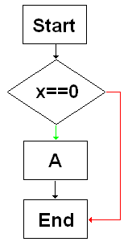
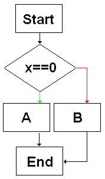
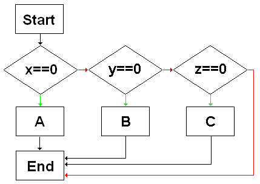
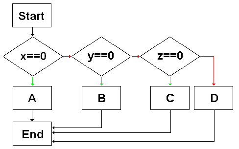
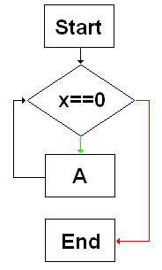
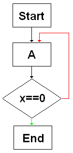

程序流程 看圖就會明白了 流程的分岔點都是判斷式 判斷過才決定要走哪一條岔路 if x==0 then -- [A] end使用 else if x==0 then -- [A] else -- [B] end使用 elseif if x==0 then -- [A] elseif y==0 then -- [B] elseif z==0 then -- [C] end使用 elseif + else if x==0 then -- [A] elseif y==0 then -- [B] elseif z==0 then -- [C] else -- [D] endwhile 迴圈 while x==0 do -- [A] endrepeat 迴圈 repeat -- [A] until(x==0)for 迴圈 這個東西的規則比上面的還要複雜一些 實際執行程式碼來看結果會比較好理解-- 會依序印出 0 1 2 3 4 5 for i=0,5,1 do print(i) end -- 會依序印出 3 7 11 15 for i=3,15,4 do print(i) end上面是 for 迴圈在數字計數上的用法 還有另外的用法是用來拜訪 table 內含的每一項變數 在 table 的教學那邊有個範例使用 for 來示範如何將 table 的內容物一一複製出來